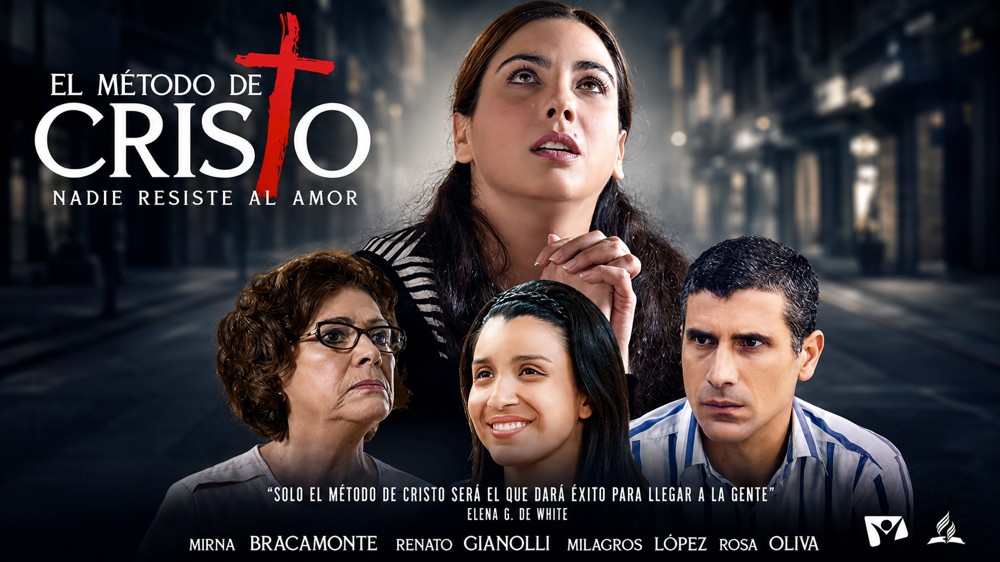

“El Salvador trataba con los hombres como quien deseaba hacerles bien. Les mostraba simpatía, atendía a sus necesidades y se ganaba su confianza. Entonces les decía: ‘Seguidme.’”
Tres prácticas que preparan el corazón del testigo.
Pulsa cada paso para descubrirlo.
Un paso a la vez.
Quince módulos. Veinte lecciones. Un camino bíblico, ordenado, y completo. Empieza por el primero — o elige el tema que más te llama.
Filtra por interés
No hay módulos en esta categoría todavía.
Mateo 28:18-20
“Por tanto, id, y haced discípulos a todas las naciones, bautizándolos en el nombre del Padre, y del Hijo, y del Espíritu Santo; enseñándoles que guarden todas las cosas que os he mandado.”
Hechos 8:26-35
Y el etíope dijo a Felipe: “Te ruego que, si entiendes, te acerques y te sientes conmigo.” Entonces Felipe se acercó, y oyendo que leía al profeta Isaías, le dijo: “¿Entiendes lo que lees?” — Comenzando desde esta escritura, le anunció el evangelio de Jesús.
Felipe vio (Contacto), corrió y se acercó (Confianza), explicó las Escrituras (Convicción), y bautizó al nuevo discípulo (Comisión).
Una enseñanza para profundizar en el método de Cristo y aplicarlo en tu vida.

No esperes una vocación especial. Esta semana: un nombre, una oración, un encuentro.
Lecciones de la Historia · Verdad para el Presente · Esperanza para el Futuro